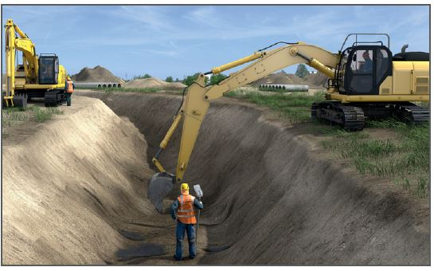
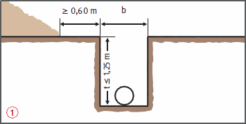
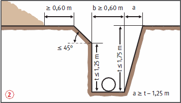
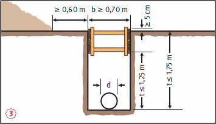
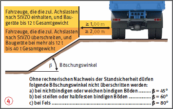

Geböschte Baugruben und geböschte Gräben
|
|

Gefährdungen
- Durch nicht ordnungsgemäß ausgeführte Böschungen kann es zu Verschüttungen kommen.
Allgemeines
- Vor Beginn der Aushubarbeiten prüfen, ob erdverlegte Leitungen oder Anlagen vorhanden sind.
- Am oberen Rand ist beidseitig ein mindestens 0,60 m breiter Schutzstreifen freizuhalten
 .
.
- Die Arbeitsraum- und Mindestgrabenbreiten sind zu beachten.
- Bei Aushubarbeiten sind alle Gegebenheiten und Einflüsse zu berücksichtigen, die die Standsicherheit der Baugruben- oder Grabenwände beeinträchtigen können. Das sind z. B.:
- Störungen des Bodengefüges (Klüfte, Verwerfungen),
- Verfüllungen oder Aufschüttungen,
- Grundwasserabsenkungen,
- Zufluss von Schichtenwasser,
- starke Erschütterungen (Verkehr, Rammarbeiten).
Schutzmaßnahmen
- Baugruben und Gräben bis 1,25 m Tiefe dürfen ohne Verbau mit senkrechten Wänden hergestellt werden, wenn
- Fahrzeuge und Baugeräte die zulässigen Abstände einhalten,
- keine besonderen Gegebenheiten oder Einflüsse die Standsicherheit gefährden,
- keine baulichen Anlagen gefährdet werden,
- die Neigung des angrenzenden Geländes bei nichtbindigen Böden ≤ 1:10, bei bindigen Böden ≤ 1:2 beträgt.
- Bei Grabentiefen bis 0,80 m kann auf einer Seite auf den Schutzstreifen verzichtet werden.

- Baugruben und Gräben bis 1,75 m Tiefe dürfen in mindestens steifen, bindigen Böden ohne Verbau hergestellt werden, wenn
- Fahrzeuge und Baugeräte die zulässigen Abstände einhalten,
- keine besonderen Gegebenheiten oder Einflüsse die Standsicherheit gefährden,
- keine baulichen Anlagen gefährdet werden,
- die Baugruben- oder Grabenwände abgeböscht werden
 oder der mehr als 1,25 m über der Sohle liegende Bereich entweder unter ≤ 45° abgeböscht oder gemäß Abb.
oder der mehr als 1,25 m über der Sohle liegende Bereich entweder unter ≤ 45° abgeböscht oder gemäß Abb.  gesichert wird,
gesichert wird,
- die Neigung des angrenzenden Geländes ≤ 1:10 beträgt.


- Unverbaute Baugruben und Gräben über 1,75 m Tiefe müssen von der Sohle bis zur Geländeoberkante geböscht werden.
Der Böschungswinkel richtet sich nach der anstehenden Bodenart  .
.
- Die Standsicherheit der Böschungen ist nachzuweisen, wenn z. B.:
- die Böschung höher als 5,00 m ist,
- die Böschungswinkel β überschritten werden ,
- vorhandene Leitungen oder bauliche Anlagen gefährdet werden können.
- Bei Gräben mit einer Breite von > 0,80 m sind Übergänge erforderlich; die Übergänge müssen mindestens 0,50 m breit sein.
- Bei einer Grabentiefe von > 1,00 m müssen die Übergänge beidseitig mit dreiteiligem Seitenschutz versehen sein.
- Bei Baugruben- oder Grabentiefen > 1,25 m sind als Zugänge Bautreppen oder Bauleitern zu benutzen.
- Sicherheitsabstände zwischen Böschungskante und Fahrzeugen oder Baugeräten usw. einhalten .
- Böschungen mit mehr als 60° Neigung und mehr als 2,0 m Tiefe mit Sicherung gegen Absturz versehen.
Sicherheitsabstände von Fahrzeugen, Baumaschinen oder Baugeräten bei nicht verbauten Baugruben und Gräben mit Böschungen

Zusätzliche Hinweise zur Verkehrssicherung
- Verkehrssicherung vornehmen, wenn Baugruben oder Gräben im Bereich des öffentlichen Straßenverkehrs hergestellt werden oder die Herstellung Auswirkungen auf den Straßenverkehr hat. Absprache mit den zuständigen Behörden.
07/2021